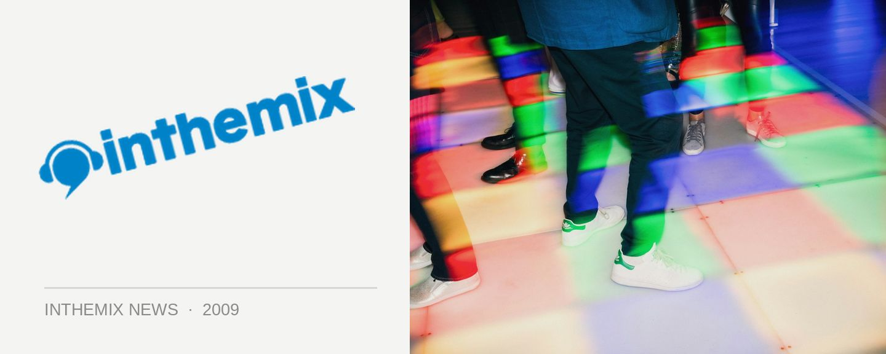

Gatecrasher roars again with Super Sci-Fi tour
Global clubbing brand Gatecrasher has been responsible for generating plenty of amazing and euphoric memories over the past decade or so, remembered for the legendary Sheffield club as well as some spectacular events in Australia over the years, and in August it’ll be coming back. The Super Sci Fi Tour 2009 will feature production veteran David Forbes as well as Re-Ward, along with local duties handled by Dr Willis.
David Forbes is most definitely no stranger to the trance scene, having been responsible for the seminal Questions (Must Be Asked) way back in the day, but he’s had a production resurgence as of late with his productions out on labels like Armada, and anthems like Foldback getting caned to massive audiences by DJs like Paul van Dyk.
Re-Ward on the other hand had his first breakthrough being singed to Tiesto’s label Black Hole Recordings as a teen, and he’s since gone on to release material on the labels of other big guns like Armin van Buuren and Sander van Doorn. Dr Willis will also be on deck, sure to be dropping a few tunes from his new Freefall label that he’s kicked off this year.
Gatecrasher – Super Sci Fi Tour 2009:
Friday August 14 – Home, Sydney
Saturday August 15 – Heritage, Carins
Friday August 21 – Family, Brisbane
Saturday August 22 – Chasers, Melbourne